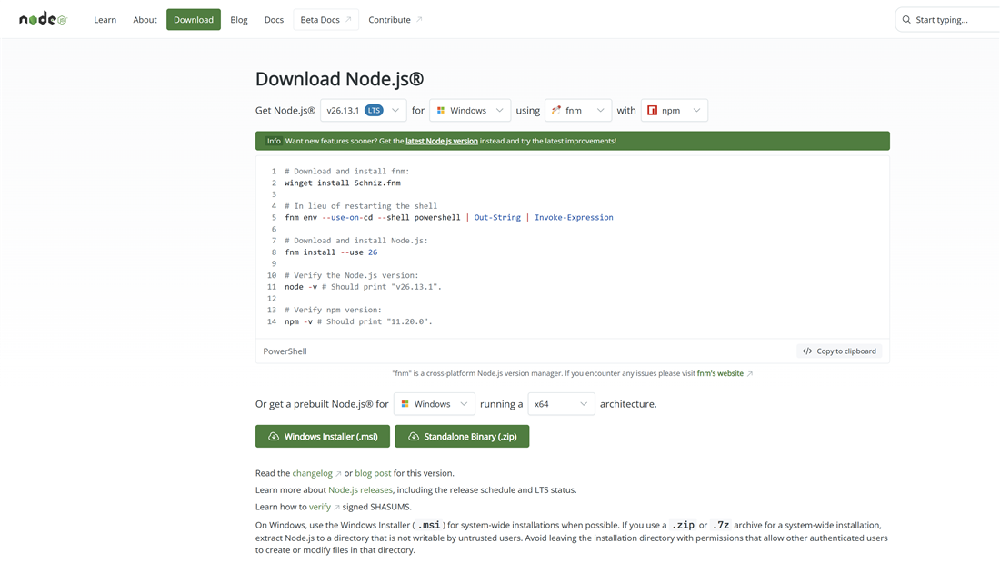
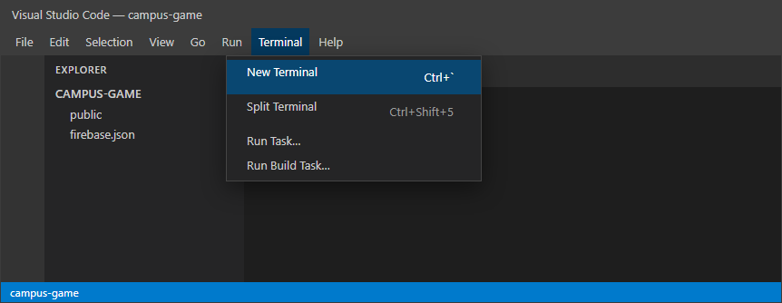
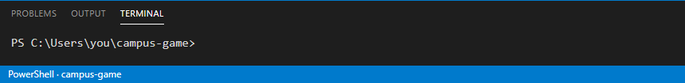
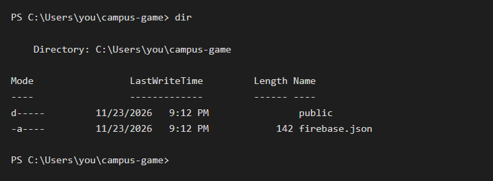
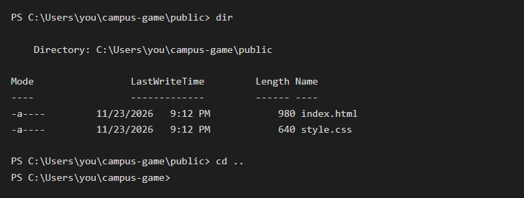
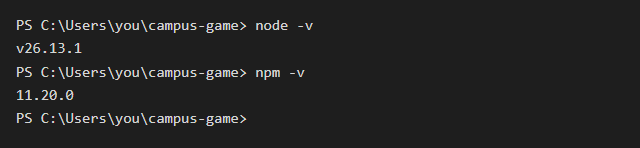

Chapter 5 of 18
Host the page and open the link
The previous chapter chose Firebase Hosting: a folder of files, served over HTTPS, with no Apache machine to keep running. Put the page on your Firebase project, then open the address it prints. The test is whether another browser can see it.
Create the project
Sign in at the Firebase console. Add a project. A short name such as campus-game-night is enough. You can turn Google Analytics off for this exercise. Copy the project ID from Project settings. It is not always the same as the name you typed.
What you are installing
Three programs are involved. You download one of them. The other two arrive with it or through it.
Node.js runs JavaScript on your computer, outside the browser. The campus page does not need it. The upload command does: that command is a JavaScript program.
npm comes inside the Node.js installer. You do not download it on its own. npm's job is to fetch other programs. The letters stand for Node package manager.
firebase-tools is the Firebase program npm will fetch. After it is installed, the terminal understands the word firebase. That word uploads public and signs you in. The tools install for the whole computer. They do not go inside campus-game.
Where to install Node.js, and how
Open nodejs.org/en/download. The green box on that page is a script for a different tool, fnm. This chapter uses the installer button under that box.

- Under “Or get a prebuilt Node.js,” set the operating system to Windows or macOS, matching your computer.
- On Windows, click Windows Installer (.msi). On a Mac, the button is the .pkg installer. Leave the zip and the source tarball alone.
- Run the file that downloads. Step through the installer and keep the defaults. On Windows, leave Add to PATH checked when you see it. The installer chooses its own folder, such as Program Files. You do not point it at
campus-game. - If Visual Studio Code was already open, quit it completely and open the
campus-gamefolder again. A terminal that started before the install still cannot see Node.js.
What a terminal is
A terminal is a text window that runs commands. You type one line, press Enter, and the program prints its answer underneath. It is a third program, beside the editor and the browser. The editor saves files. The browser draws the page. The terminal runs npm and firebase.
The prompt is the text already sitting on the line before you type. It names the folder the next command will use. On Windows the prompt usually starts with PS, which means PowerShell. On a Mac the prompt often ends with %.
Chapter 1 named the panel under the editor. This is the first chapter that asks you to type in it.
Open the terminal in the right folder
The command has to run in campus-game, the folder that contains public and firebase.json. firebase.json is the file from the previous chapter. Save it beside public, not inside public.
- In Visual Studio Code, choose File → Open Folder and open
campus-game. Openingpublicinstead puts every command one folder too deep. - Open the terminal with Terminal → New Terminal. The shortcut is
Ctrl+`, the backtick key beside 1. On a Mac the shortcut isControl+`. You can also right-clickcampus-gamein the Explorer and choose Open in Integrated Terminal. - A panel opens under the editor. Click the Terminal tab if the panel is showing Problems or Output instead of a prompt.


Read the end of the prompt.
campus-gamemeans the next command runs in the right folder.publicmeans you are one level too deep. Typecd ..and press Enter. Two dots means the parent folder.- A different name, such as Desktop or your user folder, means you opened the wrong folder. Type
cd, a space, then the path. In the Explorer, right-clickcampus-gameand choose Copy Path, then paste that path aftercd.
cd C:\Users\you\campus-game
dircd ~/campus-game
lsReplace C:\Users\you\campus-game with the path you copied. dir on Windows and ls on a Mac print the names in the current folder. You want to see public and firebase.json.


Check Node.js, then install the Firebase command
In that same terminal, ask for the version of each program. A version number on its own line means the installer worked.
node -v
npm -v
If the terminal says node is not recognized, or command not found, the panel was opened before the installer finished. Close the terminal with the trash icon on its tab, quit Visual Studio Code, open campus-game again, and open a new terminal. Then run the two version commands again.
Install the Firebase command and sign in with the same Google account you used in the Firebase console. -g means one install for this computer, available in every folder.
npm install -g firebase-tools
firebase loginfirebase login opens a browser. Choose the Google account and allow the CLI. When the browser says you are logged in, come back to the terminal. It should say success. If the terminal asks for a password while npm installs, that password is for this computer. Type it in the terminal. It is not written into firebase.json or index.html.
Deploy from the outer folder
The prompt still has to end in campus-game. Deploy only hosting.
firebase deploy --only hosting --project YOUR_PROJECT_IDIf the command says you are in the wrong folder, you are probably inside public. Move up one level. If it asks to overwrite index.html, say no.
Test the link
Copy the Hosting URL the command prints. It ends in web.app. Open it in a private window, or send it to your phone. You are done with this chapter when all of these are true:
- The heading and the list match the file you saved.
- The image appears.
- The link opens.
- The colors from
style.cssare there. - The address starts with
https://, notfile:///.
If the image is missing, it is not in public, or src spells the name differently. Deploy again after you fix the file. The old link shows the new files after the new deploy finishes.
Check your understanding
Choose an answer for each question.